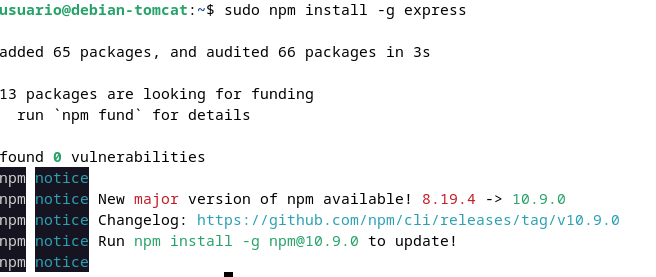
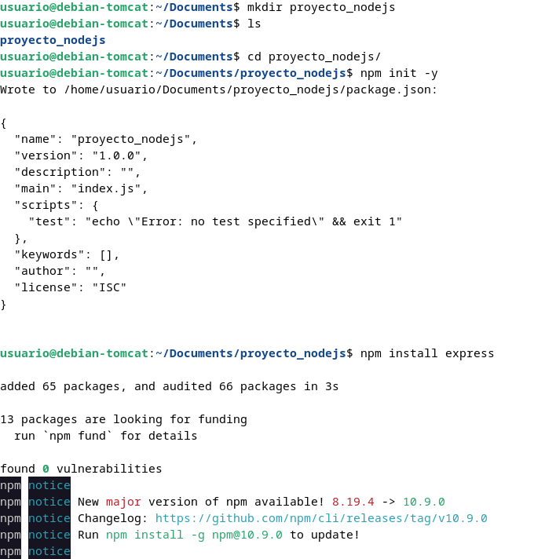
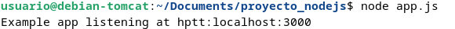
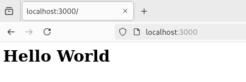

Practica 3.2: Despliegue de aplicaciones con Node Express
Introducción
Vamos a realizar el despligue de una aplicación Node.js, la diferencia que la aplicación no se despliega sobre un servidor si no que la aplicación es el servidor
Instalación de Node.js, Express y test de la primera aplicación
Antes debemos comprobar que el servidor tomcat está apagado; primero comprobamos el estado con el comando sudo systemctl status tomcat10 y si el estado es runnig lo paramos de la siguiente manera sudo systemctl stop tomcat10.
Primero comprobamos que los paquetes están actualizados con sudo apt update y sudo apt upgrade. Seguidamente añadimos la rama 16.x a la rama del repositorio de Node.js

Y despues simplemente instalamos Node.js con el siguiente comando
Instalación de ExpressJS
Ahora instalamos Express.js y para hacerlo de forma global introducimos el siguiente comando

Con esta serie de comandos crearemos un archivo e inicializaremos un proyecto Node.js con express.js

Creamos el fichero app.js e introducimos el siguiente código de javaScript
const express = require('express')
const app = express()
const port = 3000
app.get('/', (req, res) => {
res.send('Hello. Welcome to this blog')
})
app.listen(port, () => {
console.log(`Example app listening at http://localhost:${port}`)
})
Y por último para comprobar la correcta instalación iniciamos el servidor con node app.js y deberiamos ver algo así:

También tenemos que poder acceder a este servidor desde nuestra máuqina local con http://ip-maqina:3000
Despliegue de una nueva aplicacion
Para practicar el despliegue de aplicaciones de terceros lo haremos de una aplicación de un repositorio github.
Primero clonamos dicho repositorio
git clone https://github.com/MehedilslamRipon/Shopping-Cart-Application
Instalamos npm en este proyecto npm install, e iniciamos la aplicaion npm run start:
Nos aparecerá el siguiente error sh: 1: nodemon: not found y esto es porque no teneos instalado nodemon de forma local en el proyecto y con
Y con esto ya deberia funcionar nuestro proyecto

Cuestiones
Cuando ejecutáis el comando npm run start, lo que estáis haciendo es ejecutar un script:
-
¿Donde podemos ver que script se está ejecutando? El script que se ejecuta con npm run start está definido en el archivo package.json del proyecto, dentro de la sección "scripts"
-
¿Qué comando está ejecutando?
El comando que se ejecuta es el valor que se encuentra en la sección "start" dentro del objeto "scripts" en package.json.